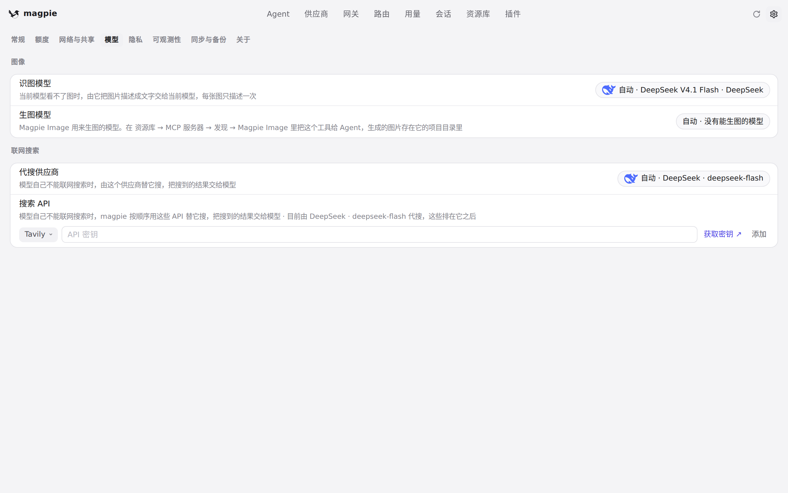
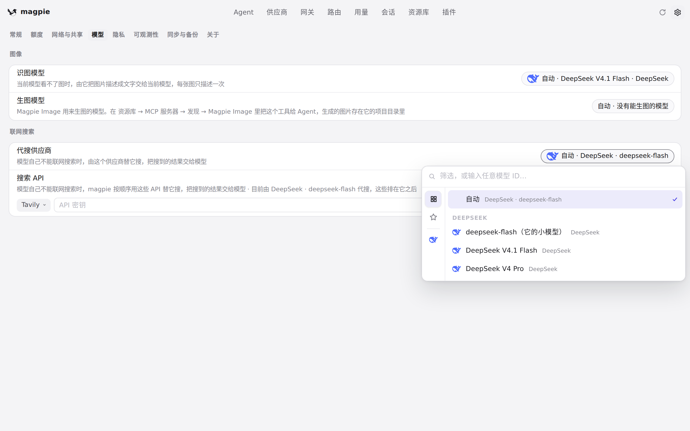
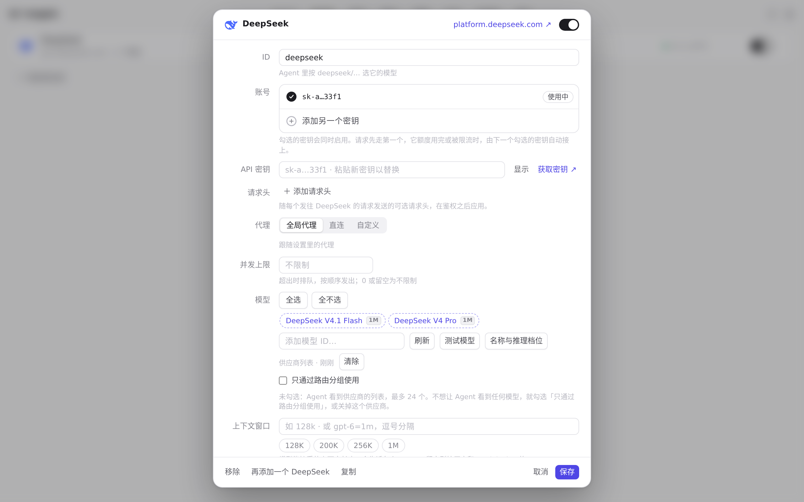

#686 界面预览
commit 710020d · 回到 PR · 这个 PR 让「标为能联网搜索」的中转站可以手动指定为代搜供应商：它开始出现在设置里代搜供应商的选择列表中（但 magpie 自动挑选时仍会跳过它）。同时把两处说明文字改成「不会被自动选择／可以手动指定」，一处是设置里代搜供应商一行的提示，一处是供应商编辑器里「联网搜索」一行的说明。
红线是鼠标走过的轨迹，红色圆环是一次点击；底部文字是这一步在做什么。空格暂停，← → 逐段查看。

代搜供应商的选择列表 · 代搜供应商一行：没有手动指定时的样子

代搜供应商的选择列表 · 选择列表里列出了哪些可以被指定

供应商编辑器里的联网搜索 · DeepSeek 的编辑器